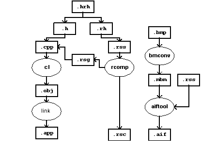

|
| |
A Symbian GUI application has several components:
a polymorphic DLL which defines the application for the GUI framework.
a resource file which contains definitions for GUI elements and translatable strings.
an optional application information file which specifies the icon, caption and embedding capabilities of the application.
To appear on the shell, GUI
applications must be run from the \system\apps\appname\
directory. The application, its resource file and its application information
file must be named appname.app,
appname.rsc, and
appname.aif respectively. The toolchain
used to deliver these files is shown below.

Toolchain for a GUI application
The diagram shows the full complexity of the toochain. Fortunately the build process hides this complexity — see the linked topic below. The following sections discuss the special configuration issues associated with building for GUI application targets.
How to use the Symbian build process
A GUI application is a polymorphic DLL. The mmp project specification has special support for this type of polymorphic DLL.
Specify the TARGETTYPE line as: TARGETTYPE
appThis causes makmake to include a linker command to use
the NewApplication() function as the ordinal-1 export from the
application DLL. This is a convenience because GUI applications are a common
type of polymorphic interface DLL. For other polymorphic interface DLLs, a
.def file would have to be used to specify the ordinal-1
export.
Specify the UID for the application in a UID line:
UID 0x100039CE
UID3. The
UID2 value 0x100039CE is the unique identifier for Unicode
application type polymorphic DLL — all applications will have
this UID. The UID3 value is the unique identifier for the particular
application — this is obtained from Symbian.
Specify the output of the build process using the TARGETPATH
line: TARGETPATH \system\apps\AppName
This is compulsory for GUI applications, and is assumed relative to the EPOC
z: drive.
Specify the application’s resource file in the
RESOURCE line: RESOURCE AppName.rssThis
is not required for other types of project.
Optionally specify the information required to build the
application information file in the AIF line. AIF target-file
source-path resource [ color-depth ] source-bitmap-list The source-bitmap-list is optional, no icon bitmaps need be supplied. Application
information files are discussed in greater detail in a following
section.
An example of a real GUI application project file is given
below — HelloWorld.mmp. Note that the
mmp file does not have an AIF line and will hence not build an
application information file.
TARGET HelloWorld.app
TARGETTYPE app
UID 0x100039CE 0x10004299
TARGETPATH \system\apps\HelloWorld
SOURCEPATH .
SOURCE HelloWorld_Main.cpp
SOURCE HelloWorld_Application.cpp
SOURCE HelloWorld_Document.cpp
SOURCE HelloWorld_AppUi.cpp
SOURCE HelloWorld_AppView.cpp
USERINCLUDE .
SYSTEMINCLUDE \epoc32\include
RESOURCE HelloWorld.rss
LIBRARY euser.lib apparc.lib cone.lib eikcore.lib
|
A resource file is available to an application at run-time, and
usually has extension .rsc. It contains resources compiled from a
source file, .rss.
Each resource is a sequence of bytes. Resources within a file are
identified by number at run-time, but may also be identified symbolically in
the source file. The resource compiler rcomp compiles a
.rss into a .rsc, and also emits a series of
#define statements into a .rsg file, which the C++
program may #include, to allow resources lookup by symbolic name
rather than by number.
The .rsg file is required at compile time. Therefore,
the resource compiler must be run before the C++ compiler.
Resource data is mapped by structs — in a similar way
to C’s structs. Resource structs are defined using STRUCT
statements which are understood only by the resource compiler. EPOC provides
many struct types: occasionally, applications also add their
own. STRUCT statements are included in headers, conventionally
with a .rh extension. These are #included into
.rss files.
Symbolic constants for various purposes must be available to both C++
programs and resource file definitions. These are defined using
#define statements or enum statements, and included
in .hrh files. These may be #included into either C++
or resource scripts.
The resource compiler may be integrated into the Visual Studio and
invoked as a tool. It is also invoked automatically by the build process if a
resource is specified in the project’s mmp file, as
discussed above.
|
Application information files are only required by GUI targets. They contain the icon and caption information used to represent the application in the shell, and also information about the applications capabilities, e.g. whether its documents can be embedded into another application.
The application icon is actually several images of different
sizes — the actual sizes are specific to a particular reference
design. Each image actually uses two bitmaps: one for the image itself, and
another for the mask. The mask bitmap should be black for where the image data
is to be used, and white for where background data is to be used. These
bitmaps, and an aif resource file, must be specified in the
mmp file’s AIF line to cause the build process
to automatically build the aif.
If an application does not have an application information file
(.aif), then:
a default icon will be used both for the application and its documents.
embedding will not be supported
the application will not support new-file — i.e., the ability to close one file and open another, when requested by the shell.
the application’s caption will be the name of its executable, without the extension.
Application information files allow non-default values for these
properties to be specified, using a special-purpose resource script. This
script may refer to a .mbm which is used for the
application’s icon in various sizes. It may also contain the caption for
the application in more than one language.
|
On WINS, all components of an application should be built into the
target directory on the simulated drive z:. For debug, this is
epoc32\release\wins\udeb\z\system\apps\appname\.
This is the default target path for abld. To launch a GUI
application, you need to launch a shell. Usually, this is done by first
launching the Emulator, epoc32\release\wins\udeb\epoc.exe.
|
On ARMI, all components should be built or copied into the release
directory on the PC: epoc32\release\armi\urel\. Then, copy to
c:\system\apps\appname\
on the target machine and execute using the machine’s shell.
Copyright ©2002 Symbian Ltd. 6.1-00174 |
|